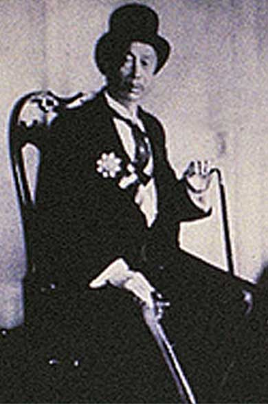

The Apex of Success
Apart from being an illustrious businessman, Cheong was also an ardent traveller and often enjoyed picking up new experiences and skills.
Having a newfound taste for Western wine, he transformed his interest into the established Chang Yu winery in 1892. Founded in Yantai in China’s Shantung province, the winery specialized in producing the finest wines that first captivated Cheong. Currently owned by the Government and touted as among the largest wineries in the world, the company now supplies up to 25% of all Western wines in China, making it the country’s most successful Western wine producer.
Cheong had other passions apart from business. He was a nationalist and displayed his loyal contribution to the country by chairing the Nanyang movement to China, which helped in the establishment of modern banks and capital for funding railroads and technical institutions in his motherland. His efforts were recognized by the Manchu Empress Dowager, who promoted him to Mandarin of the Highest Order and Special Trade Commissioner for Southeast Asia.


Before returning to China in 1986 to head the ministry of Commerce and railway services in the country, Cheong established several Chinese banks in Penang. In 1901, he was rightly promoted to Deputy Minister and later became a senator in parliament in 1911 with the role of advising the Chinese government on administrative and trade matters.
Having displayed an inspiring mastery and flair in both Asian and Western traditions, Cheong was revered by the people of his time. His stature and prosperity were evidently demonstrated by the many majestic mansions that were dotted around Asia, along with 8 officially known wives, concubines and handmaidens. Though the number of children he fathered remains unclear, he has officially acknowledged 8 sons and 6 daughters.
On 11th September 1916, Cheong Fatt Tze met his demise in Jakarta as a result of pneumonia. His life however, was celebrated by many nations and authorities. On the day of his death, utmost respect was paid when the British and Dutch authorities summoned for flags to be lowered to half-mast, a deeply symbolic and ceremonious act to reify the life of a prominent and legendary man.
Today, Cheong Fatt Tze’s magnificence and brilliance lives on in the history and culture of Penang through the grandeur of The Blue Mansion.